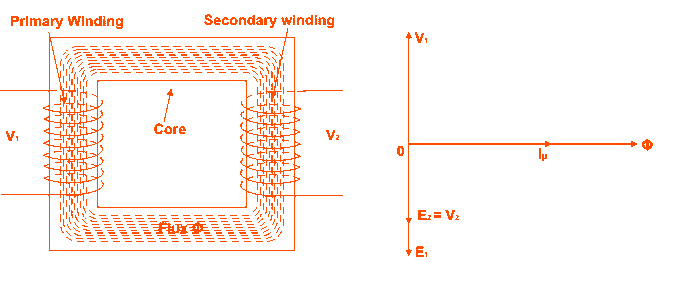
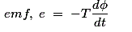

Emf Equation of Transformer
EMF Equation of transformer can be established in a very easy way. Actually in electrical power transformer, one alternating electrical source is applied to the primary winding and due to this, magnetizing electric current flowing through the primary winding which produces alternating flux in the core of transformer. This flux links with both primary and secondary windings. As this flux is alternating in nature, there must be a rate of change of flux. According to Faraday's law of electromagnetic induction if any coil or conductor links with any changing flux, there must be an induced emf in it. As the electric current source to primary is sinusoidal, the flux induced by it will be also sinusoidal. Hence, the function of flux may be considered as a sine function. Mathematically, derivative of that function will give a function for rate of change of flux linkage with respect to time. This later function will be a cosine function since d(sinθ)/dt = cosθ. So, if we derive the expression for rms value of this cosine wave and multiply it with number of turns of the winding, we will easily get the expression for rms value of induced emf of that winding. In this way, we can easily derive the emf equation of transformer.

Let's say, T is number of turns in a winding,
Φm is the maximum flux in the core in Wb.
As per Faraday's law of electromagnetic induction,

Where φ is the instantaneous alternating flux and represented as,
As the maximum value of cos2πft is 1, the maximum value of induced emf e is,
To obtain the rms value of induced counter emf, divide this maximum value of e by √2.
This is EMF equation of transformer.
If E1 & E2 are primary and secondary emfs and T1 & T2 are primary and secondary turns then, voltage ratio or turns ratio of transformer is,
Transformation Ratio of Transformer
This constant is called transformation ratio of transformer , if T2>T1, K > 1, then the transformer is step up transformer. If T2 < T1, K < 1, then the transformer is step down transformer.
Voltage Ratio of Transformer
This above stated ratio is also known as voltage ratio of transformer if it is expressed as ratio of the primary and secondary voltages of transformer.
Turns Ratio of Transformer
As the voltage in primary and secondary of transformer is directly proportional to the number of turns in the respective winding, the transformation ratio of transformer is sometime expressed in ratio of turns and referred as turns ratio of transformer .
 by
by